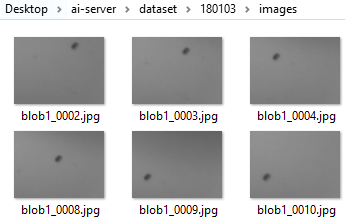
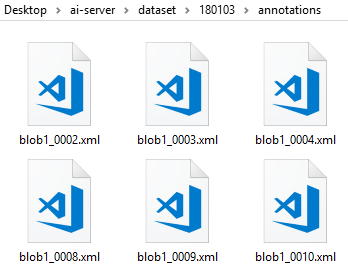
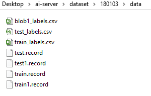

Train your own data using TensorFlow Object Detection
This article provides a summary of what has been gone through to implement blob-detection with TensorFlow object detection deep learning model. The main repository is based on TensorFlow repo
The general guideline is officially described here in the original github repo, and with some pointer from this site .
1. Setup environment
using command line, we need to point the TF Slim module as required by TF scripts later, by typing the following commands:
D:\>set PYTHONPATH=D:\workspace\projects\models\research\slim
2. Create Structured Folders
Say our dataset is placed in the folder named: 180103, three folders are needed to be created inside this folder:
- annotations
- data
- images
With the content as followings, the images folder:

The annotation folder

The data folder

The example content of blob1_0002.xml is:
<annotation verified="yes">
<folder>images</folder>
<filename>blob1_0002.png</filename>
<path>C:\Users\k\Desktop\dataset\180103\images\blob1_0002.png</path>
<source>
<database>Unknown</database>
</source>
<size>
<width>400</width>
<height>300</height>
<depth>1</depth>
</size>
<segmented>0</segmented>
<object>
<name>blob1</name>
<pose>Unspecified</pose>
<truncated>0</truncated>
<difficult>0</difficult>
<bndbox>
<xmin>246</xmin>
<ymin>15</ymin>
<xmax>297</xmax>
<ymax>67</ymax>
</bndbox>
</object>
</annotation>
with the key tags as: path, filename, size, and bndbox.
3. Convert XML to CSV files
We need to generate list of file names, containing object name and its bounding box in CSV format.
The code snippet below allows to do that:
import os
import glob
import pandas as pd
import xml.etree.ElementTree as ET
def xml_to_csv(path):
xml_list = []
for xml_file in glob.glob(path + '/*.xml'):
tree = ET.parse(xml_file)
root = tree.getroot()
for member in root.findall('object'):
value = (root.find('filename').text,
int(root.find('size')[0].text),
int(root.find('size')[1].text),
member[0].text,
int(member[4][0].text),
int(member[4][1].text),
int(member[4][2].text),
int(member[4][3].text)
)
xml_list.append(value)
column_name = ['filename', 'width', 'height', 'class', 'xmin', 'ymin', 'xmax', 'ymax']
xml_df = pd.DataFrame(xml_list, columns=column_name)
return xml_df
def main():
image_path = os.path.join(os.getcwd(), 'annotations')
xml_df = xml_to_csv(image_path)
xml_df.to_csv('blob1_labels.csv', index=None)
print('Successfully converted xml to csv.')
And below snippet code is to split the test and train label:
h1 = 'filename,width,height,class,xmin,ymin,xmax,ymax'
f1 = open('./180103/data/blob1_labels.csv')
s = f1.readlines()[1:]
shuffle(s)
print(len(s[0:40]))
print(len(s[40:]))
f2 = open('./180103/data/test_labels.csv', mode='w')
f2.write(h1)
for s1 in s[0:40]:
f2.write(s1)
f3 = open('./180103/data/train_labels.csv', mode='w')
f3.write(h1)
for s1 in s[40:]:
f3.write(s1)
For generating TFRecord dataset, we need to modify the original example script as mentioned in the official documentation as followings:
def main(_):
writer = tf.python_io.TFRecordWriter(FLAGS.output_path)
path = os.path.join(os.getcwd(), 'images')
examples = pd.read_csv(FLAGS.csv_input)
grouped = split(examples, 'filename')
for group in grouped:
tf_example = create_tf_example(group, path)
writer.write(tf_example.SerializeToString())
4. Update the configuration file
Create a training folder in the same level with the three folders mentioned earlier. Inside the folder, place the config file based on the detection model to be used. And also the object-detection label file object-detection.pbtxt.
The content of the object-detection.pbtxt is:
item {
id: 1
name: 'blob1'
}
In this case, we use ssd_mobilenet_v1_pets copied from models\research\object_detection\samples\configs
Some parameters to be changed in the config are, first num_classes - to be changed according to our object classes, in this case one. The other parameters are the location of the train and the test record files.
train_input_reader: {
tf_record_input_reader {
input_path: "./data/train.record"
}
label_map_path: "./training/object-detection.pbtxt"
}
and
eval_input_reader: {
tf_record_input_reader {
input_path: "./data/test.record"
}
label_map_path: "./training/object-detection.pbtxt"
shuffle: false
num_readers: 1
}
5. Train the dataset
We are ready to train the dataset by running the following command from the command console.
python train.py --logtostderr --train_dir=training/ --pipeline_config_path=training/ssd_mobilenet_v1_pets.config
The code train.py is available from object_detection folder.
Below is the result of training used for simple blob detection
and for the zooming case ..
.